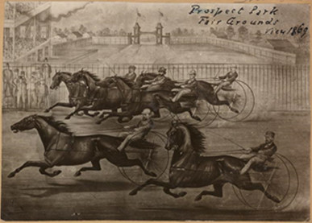
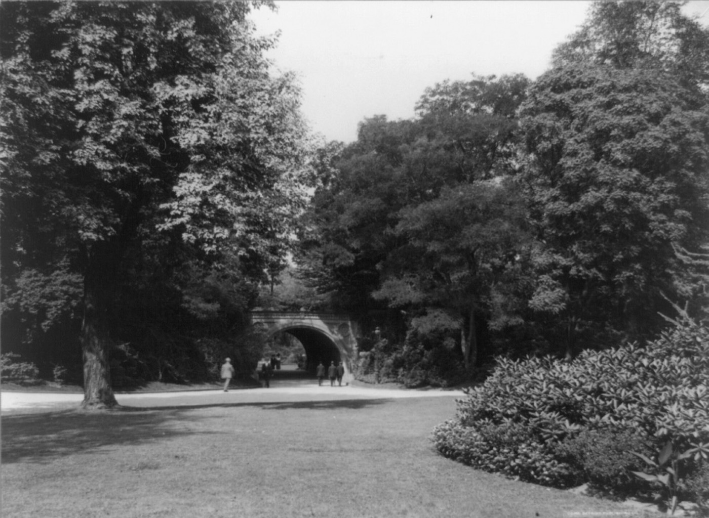
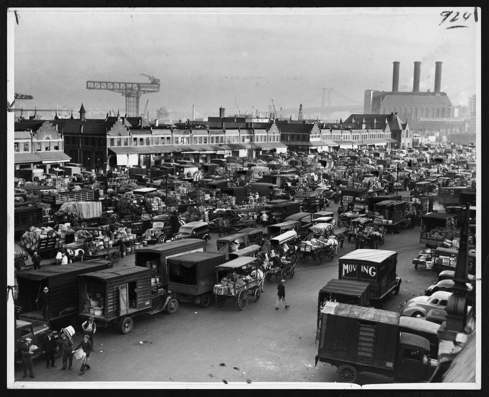

Our roots: a living equestrian history
This history comes from Shanaz Khan’s 2022 graduate thesis, ‘Where the Horses Roam’.
- 1860s
Prospect Park opens
Olmsted and Vaux designed Prospect Park with horses in mind — carriage concourses, bridle paths, and pastoral landscapes were part of the park’s original experience.
- Late 19th century
The horse powered city
Horses powered transportation, commerce, emergency services, and recreation across New York City. By 1898, the city had hundreds of stables and thousands of horses.
- 20th century
The city changes
Automobiles, trucks, buses, and subways replaced much of the horse-powered infrastructure. Stables closed, and equine spaces disappeared or were adapted.
- Today
The horses remain
Prospect Park remains one of the few places in NYC where horses are still part of the everyday public life — thanks to the historic infrastructure that still survives.
- Tomorrow
A living heritage
hhi works to preserve and reactivate this heritage so that future generations can experience the extraordinary connection between horses, people and the city.


